一、前言
Redis 高可用集群，本次使用目前的最新版本：6.2.2 （时间：2021-04-24）
1.环境
- Redis6.2.2
- CentOS Linux release 7.9.2009
- 设备有效，使用一台虚拟机，以不同的端口启动redis
二、下载redis
- Redis官网：https://redis.io/download
- 下载6.2.2版本：https://download.redis.io/releases/redis-6.2.2.tar.gz
wget https://download.redis.io/releases/redis-6.2.2.tar.gz
三、安装
- 安装redis，和旧版本一样，也是解压编译安装
# 安装依赖，编译需要
yum install -y gcc gcc-c++
# 解压
tar -zxvf redis-6.2.2.tar.gz -C /opt
# 进入redis根目录
cd /opt/redis-6.2.2
# 编译安装到/usr/local/redis
make PREFIX=/usr/local/redis install
1、添加Redis环境变量
编辑/etc/profile文件，在最后面添加
REDIS_HOME=/usr/local/redis
export PATH=$REDIS_HOME/bin:$PATH然后保存退出，执行：
source /etc/profile立即生效之后在任何地方都可以使用redis命令了。（不用去到redis的目录下执行）
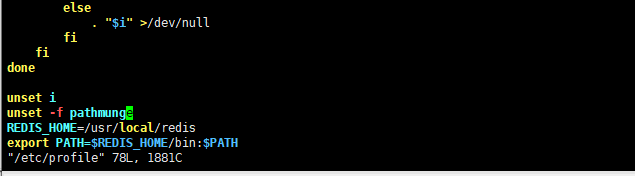
四、创建集群
1、创建配置文件
- 打算搭建6台redis的集群，3主3从
- 为了统一管理，数据全放在
/usr/local/redis/目录下面 - 复制一个默认的配置文件
# 放集群的配置文件
mkdir -p /usr/local/redis/conf/cluster
# 存放日志的
mkdir -p /usr/local/redis/logs/cluster
# 从解压的redis6中复制，默认的配置文件到 /usr/local/redis/conf 下
# 复制然后修改特定的配置，在进行复制
cp /opt/redis-6/redis.conf /usr/local/redis/conf/
2、修改配置文件
- 主要修改如下几项配置：
# 绑定本地ip地址和回环地址
bind 192.168.31.169 127.0.0.1
# 启动端口
port 7000
# 启动安全模式
protected-mode yes
# 后台运行
daemonize yes
# 设置密码
requirepass rstyro
masterauth rstyro
# pid 文件地址
pidfile /var/run/redis_7000.pid
dir /usr/local/redis/data/cluster/7000
# 日志文件地址
logfile "/usr/local/redis/logs/cluster/redis-7000.log"
# 开启集群
cluster-enabled yes
# 集群节点自动维护的文件，主要用于记录集群中节点的状态，信息和参数等
cluster-config-file /usr/local/redis/conf/cluster/nodes-7000.conf
# 如果当前redis发现有failed的槽位，默认会将cluster_state从ok转变为fail, 写入命令会失败。改为no则不会有此限制。
# 也就是如果是 no 如果写入到失败的槽位就会丢数据，如果是yes,如果有失败的槽位整个集群都不可用
cluster-require-full-coverage no
3、更细其他配置
- 然后使用sed 命令，进行替换
cd /usr/local/redis/conf
mv redis.conf redis-7000.conf
sed -e 's#7000#7001#g' -e 's#redis_7000.pid#redis_7001.pid#g' -e 's#redis-7000.log#redis-7001.log#g' -e 's#nodes-7000.conf#nodes-7001.conf#g' redis-7000.conf>cluster/redis-7001.conf
sed -e 's#7000#7002#g' -e 's#redis_7000.pid#redis_7002.pid#g' -e 's#redis-7000.log#redis-7002.log#g' -e 's#nodes-7000.conf#nodes-7002.conf#g' redis-7000.conf>cluster/redis-7002.conf
sed -e 's#7000#7003#g' -e 's#redis_7000.pid#redis_7003.pid#g' -e 's#redis-7000.log#redis-7003.log#g' -e 's#nodes-7000.conf#nodes-7003.conf#g' redis-7000.conf>cluster/redis-7003.conf
sed -e 's#7000#7004#g' -e 's#redis_7000.pid#redis_7004.pid#g' -e 's#redis-7000.log#redis-7004.log#g' -e 's#nodes-7000.conf#nodes-7004.conf#g' redis-7000.conf>cluster/redis-7004.conf
sed -e 's#7000#7005#g' -e 's#redis_7000.pid#redis_7005.pid#g' -e 's#redis-7000.log#redis-7005.log#g' -e 's#nodes-7000.conf#nodes-7005.conf#g' redis-7000.conf>cluster/redis-7005.conf
sed -e 's#7000#7006#g' -e 's#redis_7000.pid#redis_7006.pid#g' -e 's#redis-7000.log#redis-7006.log#g' -e 's#nodes-7000.conf#nodes-7006.conf#g' redis-7000.conf>cluster/redis-7006.conf
sed -e 's#7000#7007#g' -e 's#redis_7000.pid#redis_7007.pid#g' -e 's#redis-7000.log#redis-7007.log#g' -e 's#nodes-7000.conf#nodes-7007.conf#g' redis-7000.conf>cluster/redis-7007.conf
mv redis-7000.conf cluster/
mkdir -p /usr/local/redis/data/cluster/7000
mkdir -p /usr/local/redis/data/cluster/7001
mkdir -p /usr/local/redis/data/cluster/7002
mkdir -p /usr/local/redis/data/cluster/7003
mkdir -p /usr/local/redis/data/cluster/7004
mkdir -p /usr/local/redis/data/cluster/7005
mkdir -p /usr/local/redis/data/cluster/7006
mkdir -p /usr/local/redis/data/cluster/7007
4、启动redis集群
启动redis单节点
localbin/redis-server localconfredis-7000.conf
localbin/redis-server localconfredis-7001.conf
localbin/redis-server localconfredis-7002.conf
localbin/redis-server localconfredis-7003.conf
localbin/redis-server localconfredis-7004.conf
localbin/redis-server localconfredis-7005.conf停止所有redis节点
# 列出了当前主机中运行的进程中包含redis关键字的进程
ps -ef | grep redis | grep -v grep
# 列出了要kill掉这些进程的命令，并将之打印在了屏幕上
ps -ef | grep redis | grep -v grep | awk '{print "kill -9 "$2}'
# 重点这条命令。后面加上|sh后，则执行这些命令，进而杀掉了这些进程
ps -ef | grep redis | grep -v grep | awk '{print "kill -9 "$2}' | sh
5、初始化集群
# --cluster create 是固定格式，创建集群的命令 |
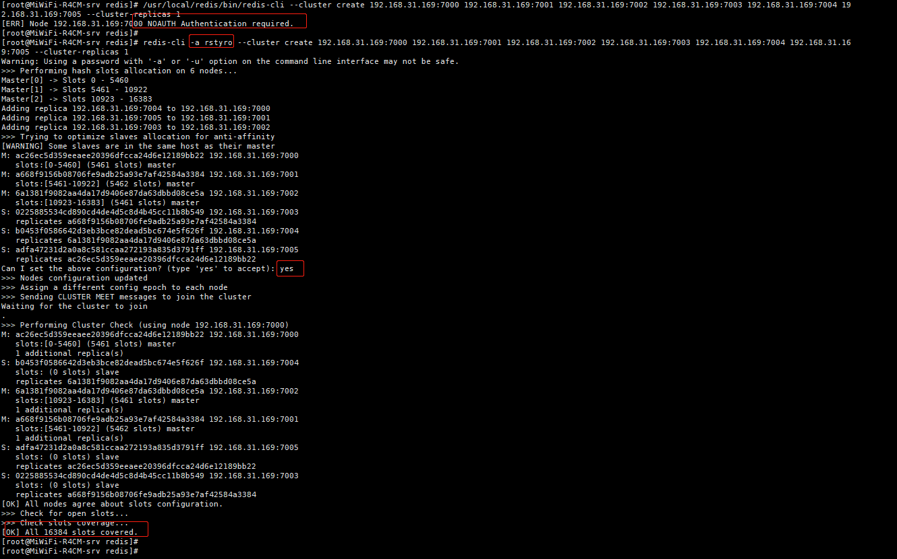
6、不停机给Redis设置密码
- 如果后期才加密码的话 给集群设置密码，在各个节点下执行：
# 设置密码
config set requirepass rstyro
# 设置连接master密码
config set masterauth rstyro
# 写入配置文件
config rewrite
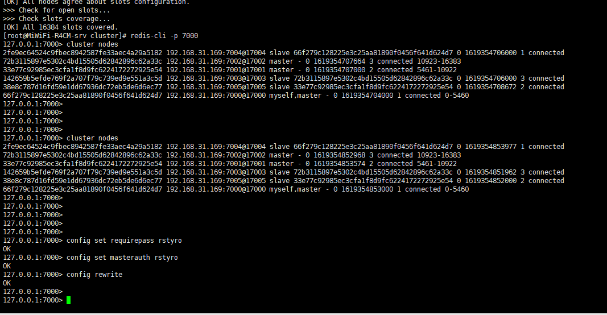
五、集群扩容
- 万一以后公司做大了，数据量大了，redis节点需要扩容。怎么整？
- 开整
- 查看redis 集群相关命令：
redis-cli --cluster help
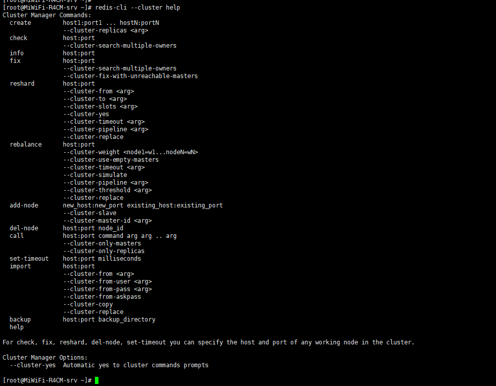
- 通过参数就知道是使用：
add-node来添加节点 - 启动两个之前配置好的70006、7007 节点
redis-server /usr/local/redis/conf/cluster/redis-7006.conf
redis-server /usr/local/redis/conf/cluster/redis-7007.conf
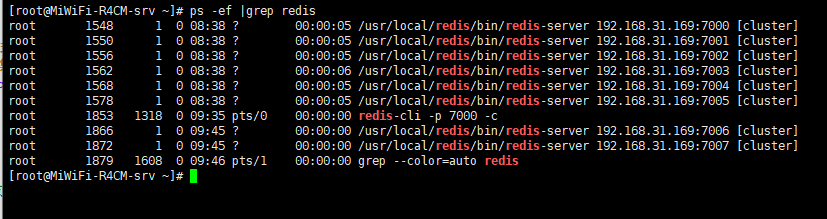
添加命令如下：
# 添加 master节点
# 格式：redis-cli -a 密码 --cluster add-node 新节点（要添加的节点：7006） 已在集群中的任意一个节点
redis-cli -a rstyro --cluster add-node 192.168.31.169:7006 192.168.31.169:7000
# 添加 slave 节点
# --cluster-slave 代表slave节点，--cluster-master-id <master-nodeId> 后面接的是这个从节点它的master是谁
redis-cli -a rstyro --cluster add-node 192.168.31.169:7007 192.168.31.169:7000 --cluster-slave --cluster-master-id 29f435c667b42a0062793217cebadfc4fb8f55d9命令过程：
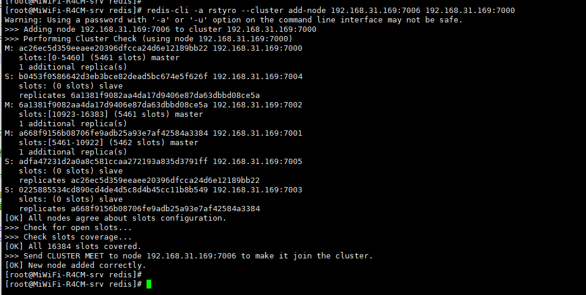
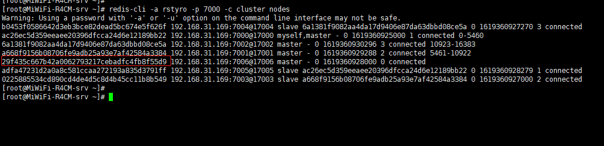
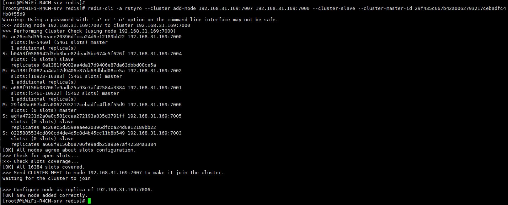
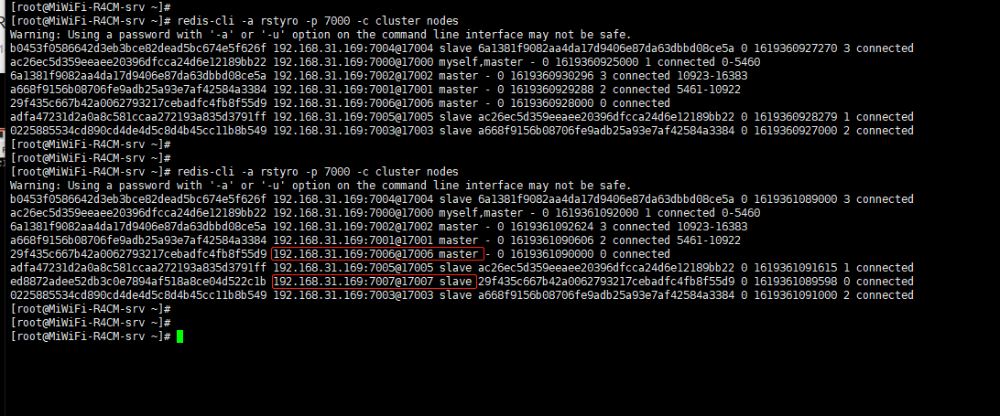
redis 集群默认有16384个槽位，索引从0开始
发现集群的槽位是平均分布的：0-5460、10923-16383、5461-10922
细心的同学，可能就会看到最后一张图，新添加的节点，没有分配到槽位。
那这个节点是不会有数据的，所以需要重新分配槽位
# 重新分配节点，reshard 后面随便写集群的任意一个节点
redis-cli -a rstyro --cluster reshard 192.168.31.169:7007执行上面的命令之后，会提示你，你要重新分配多少个槽位
输入上面的槽位之后，会让你输入一个 接收上面分配槽位的master节点ID。
然后有两个选择：
all是从其他节点平均分配出来。或者输入你要从哪几个已有槽位的master节点ID拿出来，可以输入1个或多个已有槽位的节点ID，选择完之后，输入：
done.回车即可。
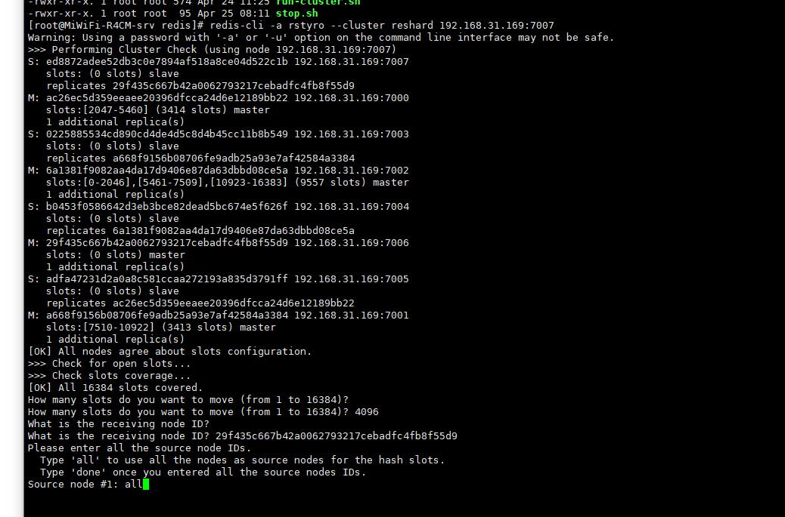
- 我这里选择平均分配
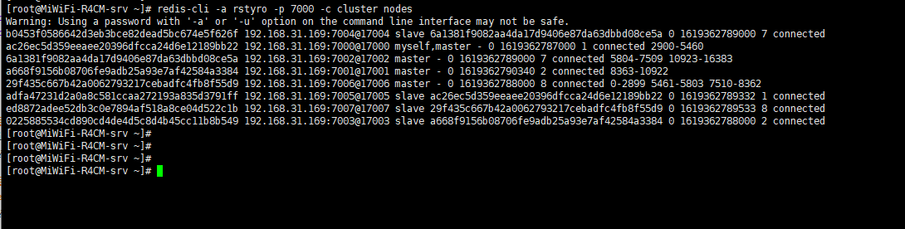
六、集群缩容
缩容其实和扩容，有点类似，也是重新分配槽位
不同的的地方就是，要移除的节点，它的槽位全部分配出去，然后移除节点即可。
[root@MiWiFi-R4CM-srv ~]#
[root@MiWiFi-R4CM-srv ~]# redis-cli -a rstyro -p 7000 -c cluster nodes
Warning: Using a password with '-a' or '-u' option on the command line interface may not be safe.
b0453f0586642d3eb3bce82dead5bc674e5f626f 192.168.31.169:7004@17004 slave 6a1381f9082aa4da17d9406e87da63dbbd08ce5a 0 1619362789000 7 connected
ac26ec5d359eeaee20396dfcca24d6e12189bb22 192.168.31.169:7000@17000 myself,master - 0 1619362787000 1 connected 2900-5460
6a1381f9082aa4da17d9406e87da63dbbd08ce5a 192.168.31.169:7002@17002 master - 0 1619362789000 7 connected 5804-7509 10923-16383
a668f9156b08706fe9adb25a93e7af42584a3384 192.168.31.169:7001@17001 master - 0 1619362790340 2 connected 8363-10922
29f435c667b42a0062793217cebadfc4fb8f55d9 192.168.31.169:7006@17006 master - 0 1619362788000 8 connected 0-2899 5461-5803 7510-8362
adfa47231d2a0a8c581ccaa272193a835d3791ff 192.168.31.169:7005@17005 slave ac26ec5d359eeaee20396dfcca24d6e12189bb22 0 1619362789332 1 connected
ed8872adee52db3c0e7894af518a8ce04d522c1b 192.168.31.169:7007@17007 slave 29f435c667b42a0062793217cebadfc4fb8f55d9 0 1619362789533 8 connected
0225885534cd890cd4de4d5c8d4b45cc11b8b549 192.168.31.169:7003@17003 slave a668f9156b08706fe9adb25a93e7af42584a3384 0 1619362788000 2 connected
[root@MiWiFi-R4CM-srv ~]#
[root@MiWiFi-R4CM-srv ~]#
[root@MiWiFi-R4CM-srv ~]#如上，我现在要移除7002节点、ID： 6a1381f9082aa4da17d9406e87da63dbbd08ce5a
上面扩容使用的命令是交互式的，现在我们使用非交互的，直接命令，不提示，如下：
1,705 5,460 7,165
# 5804-7509 和 10923-16383 算出来=1706+5461=7167，所以直接分配7167个槽位，分给：7000和7001
redis-cli -a rstyro --cluster reshard 192.168.31.169:7000 --cluster-slots 7167 --cluster-from 6a1381f9082aa4da17d9406e87da63dbbd08ce5a --cluster-to ac26ec5d359eeaee20396dfcca24d6e12189bb22 a668f9156b08706fe9adb25a93e7af42584a3384 --cluster-yes
# 校验节点
redis-cli -a rstyro --cluster check 192.168.31.169:7002
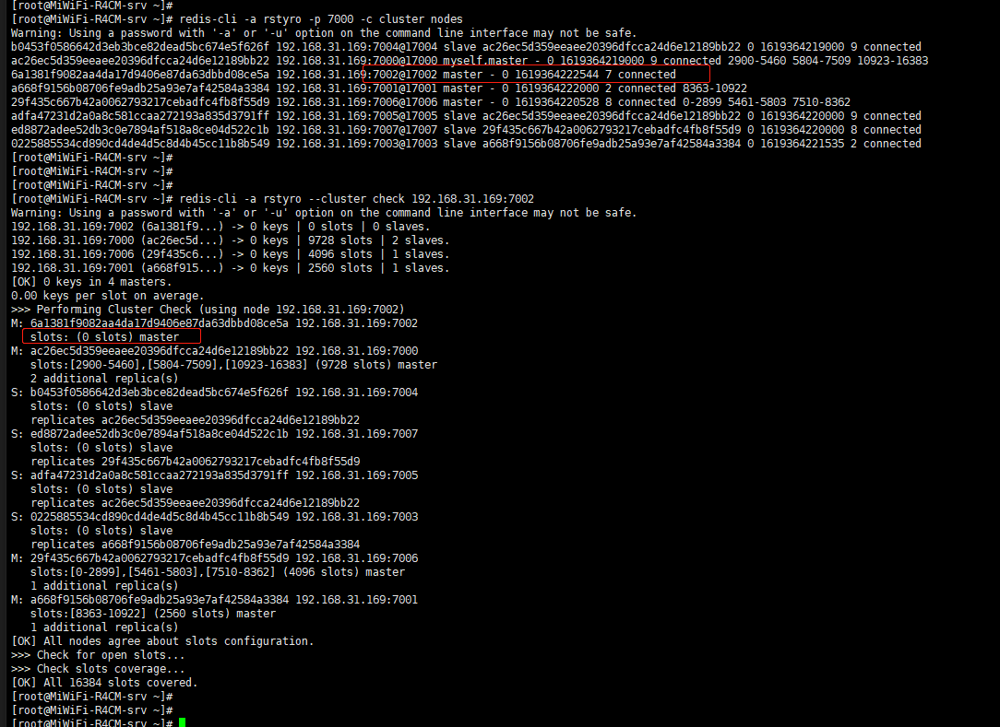
# 确定是没有槽位了，移除节点 |
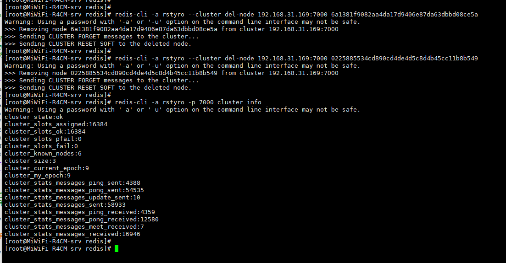
最终的节点
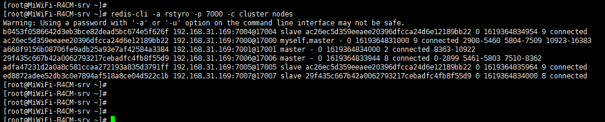
七、Springboot2与Redis集群整合
代码整合
1、导入依赖
<dependency> |
2、application.yml 配置文件
server: |
3、RedisConfig.java
Spring配置redis集群的配置类
@Configuration |
4、测试类
@RunWith(SpringRunner.class) |
5、结果
{"age":40,"username":"C++"} |
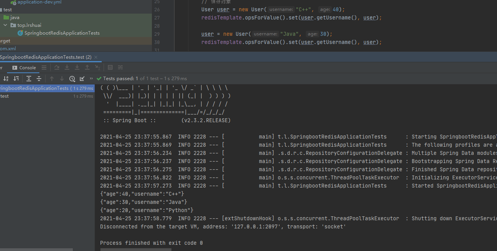